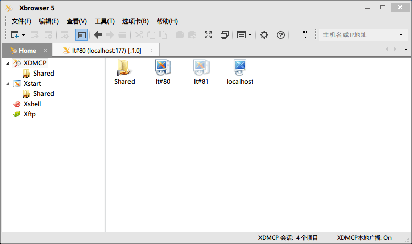
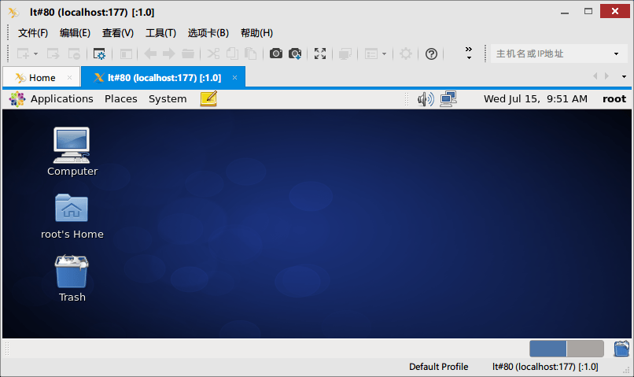

本文主要介绍通过Xmanager连接CentOS远程桌面时，在CentOS远程机器和Windows客户端需要做的一些配置。
Xmanager简介
Xmanager 全称Netsarang Xmanager，是国外一套非常优秀的远程监控软件。在UNIX/Linux和Windows网络环境中，Xmanager是较好的连通解决方案。通过Xmanager连接Linux远程桌面进行图形化管理其实就是利用了Xmanager套装里面的Xbrowser程序。
Linux远程图形化管理除了Xbrowser，还有同样优秀的VNC。
特点包括：
可通过Xcongfig工具设置多个Xmanager设置；
支持多用户的Windows终端环境；
支持多个IP地址；
支持本地资源数据库；
通过热键转换键盘映射；
支持多窗口下的Windows打印功能等
CentOS远程机器配置
- 安装gdm
yum -y install gdm
配置系统为图形模式，打开/etc/inittab，修改为id:5:initdefault: (若已为5则不需修改) 启用图形化界面
vim /etc/inittab，3改为51
id:5:initdefault:
配置gdm参数
vim /etc/gdm/custom.conf，在[security]和[xdmcp]字段下分别添加如下内容：1
2
3
4
5
6
7
8
9[daemon]
[security]
AllowRemoteRoot=true
[xdmcp]
Port=177
Enable=1
[greeter]
[chooser]
[debug]防火墙设置
关闭防火墙
临时关闭：service iptables stop
永久关闭：checkcfg iptables off在防火墙上打开udp协议177 端口
iptables -A INPUT -p tcp --dport 177 -j ACCEPTservice iptables save
- 重启机器
reboot
Windows客户端配置
XManager远程桌面连接
在Windows上打开XBrowser通过IP即可远程连接CentOS
Xbrowser>工具>选项>添加主机>连接Xshell远程桌面连接，
Xshell隧道连接>执行gnome-panel命令
备注：只能访问用户文件夹
效果图

